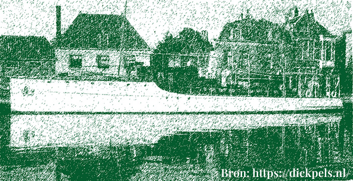

Our cause focusses mainly on the area Westelijke Eilanden in Amsterdam West. An area recently struck by polluition. Due to its history as a docking area for big ships in the industrial age, the 1800s were a time of great metal usage. Now in 2024 the canal has fallen victim to pollution. Its up to us and the volunteers to keep this water clean and usable.
AsParool has stated
